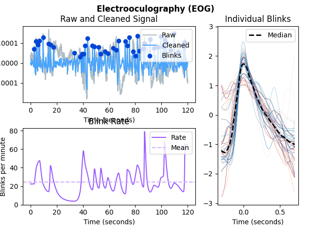
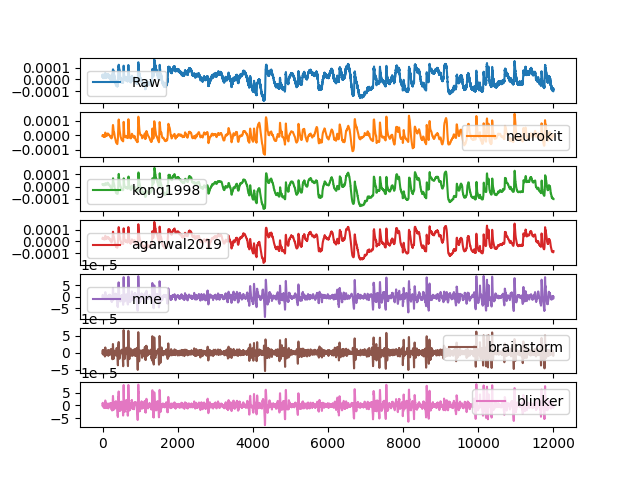
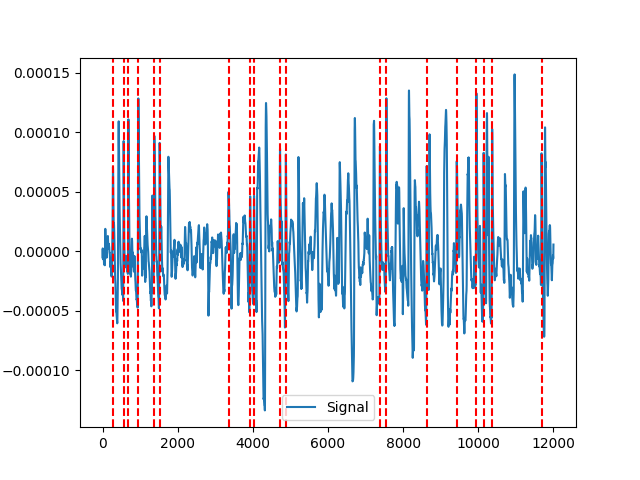
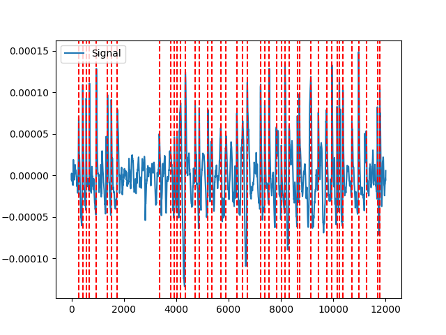
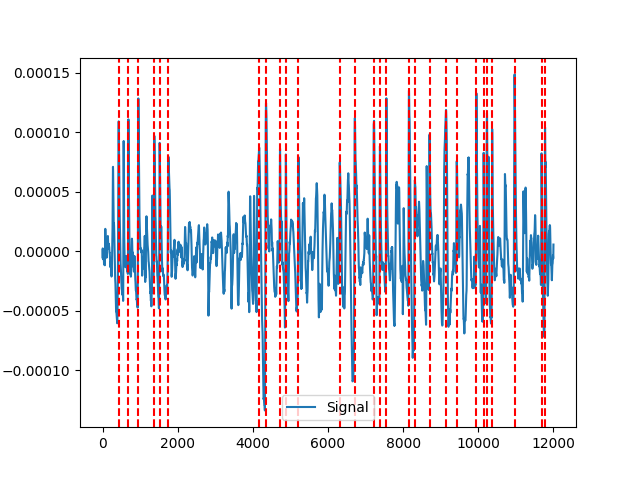
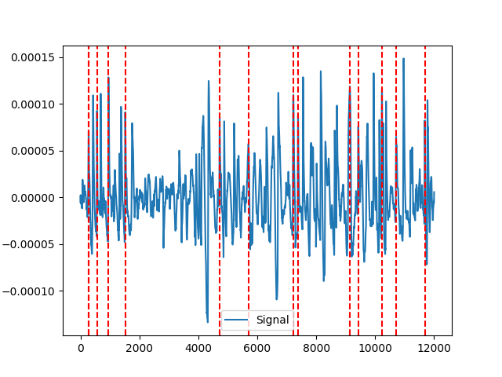
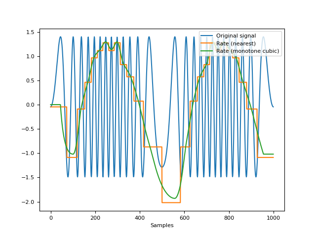

EOG
Contents
EOG#
Main#
eog_process()#
- eog_process(veog_signal, sampling_rate=1000, **kwargs)[source]#
Process an EOG signal
Convenience function that automatically processes an EOG signal.
- Parameters
veog_signal (Union[list, np.array, pd.Series]) – The raw vertical EOG channel. Note that it must be positively oriented, i.e., blinks must appear as upward peaks.
sampling_rate (int) – The sampling frequency of
eog_signal()(in Hz, i.e., samples/second). Defaults to 1000.**kwargs – Other arguments passed to other functions.
- Returns
signals (DataFrame) – A DataFrame of the same length as the
eog_signal()containing the following columns:"EOG_Raw": the raw signal."EOG_Clean": the cleaned signal."EOG_Blinks": the blinks marked as “1” in a list of zeros."EOG_Rate": eye blinks rate interpolated between blinks.
info (dict) – A dictionary containing the samples at which the eye blinks occur, accessible with the key
"EOG_Blinks"as well as the signals’ sampling rate.
See also
Examples
In [1]: import neurokit2 as nk # Get data In [2]: eog_signal = nk.data('eog_100hz') In [3]: signals, info = nk.eog_process(eog_signal, sampling_rate=100)
References
Agarwal, M., & Sivakumar, R. (2019, September). Blink: A Fully Automated Unsupervised Algorithm for Eye-Blink Detection in EEG Signals. In 2019 57th Annual Allerton Conference on Communication, Control, and Computing (Allerton) (pp. 1113-1121). IEEE.
eog_analyze()#
- eog_analyze(data, sampling_rate=1000, method='auto')[source]#
EOG Analysis
Performs EOG analysis on either epochs (event-related analysis) or on longer periods of data such as resting-state data.
- Parameters
data (Union[dict, pd.DataFrame]) – A dictionary of epochs, containing one DataFrame per epoch, usually obtained via
epochs_create(), or a DataFrame containing all epochs, usually obtained viaepochs_to_df(). Can also take a DataFrame of processed signals from a longer period of data, typically generated byeog_process()orbio_process(). Can also take a dict containing sets of separate periods of data.sampling_rate (int) – The sampling frequency of the signal (in Hz, i.e., samples/second). Defaults to 1000Hz.
method (str) – Can be one of
"event-related"for event-related analysis on epochs, or"interval-related"for analysis on longer periods of data. Defaults to"auto"where the right method will be chosen based on the mean duration of the data ("event-related"for duration under 10s).
- Returns
DataFrame – A dataframe containing the analyzed EOG features. If event-related analysis is conducted, each epoch is indicated by the Label column. See
eog_eventrelated()andeog_intervalrelated()docstrings for details.
See also
bio_process,eog_process,epochs_create,eog_eventrelated,eog_intervalrelatedExamples
In [1]: import neurokit2 as nk # Example 1: Event-related analysis In [2]: data = nk.data("eog_100hz") # Process the data for event-related analysis In [3]: df, info = nk.bio_process(eog=data, sampling_rate=100) In [4]: epochs = nk.epochs_create(df, events=[500, 4000, 6000, 9000], sampling_rate=100, ...: epochs_start=-0.1,epochs_end=1.9) ...: # Analyze In [5]: nk.eog_analyze(epochs, sampling_rate=100) Out[5]: Label Event_Onset ... EOG_Rate_Min_Time EOG_Blinks_Presence 1 1 500 ... 0.010553 1 2 2 4000 ... 1.900000 1 3 3 6000 ... 1.900000 0 4 4 9000 ... 1.407538 1 [4 rows x 10 columns] # Example 2: Interval-related analysis with same dataset In [6]: nk.eog_analyze(df, sampling_rate=100) Out[6]: EOG_Peaks_N EOG_Rate_Mean 0 44.0 24.476583
eog_plot()#
- eog_plot(eog_signals, peaks=None, sampling_rate=None)[source]#
Visualize EOG data
- Parameters
eog_signals (DataFrame) – DataFrame obtained from
eog_process().peaks (dict) – The samples at which the blink peaks occur. Dict returned by
eog_process(). Defaults toNone. Must be specified to plot individual blinks.sampling_rate (int) – The sampling frequency of the EOG (in Hz, i.e., samples/second). Needs to be supplied if the data should be plotted over time in seconds. Otherwise the data is plotted over samples. Defaults to
None. Must be specified to plot individual blinks.
- Returns
fig – Figure representing a plot of the processed EOG signals.
Examples
In [1]: import neurokit2 as nk # Get data In [2]: eog_signal = nk.data('eog_100hz') # Process In [3]: eog_signals, peaks = nk.eog_process(eog_signal, sampling_rate=100) In [4]: nk.eog_plot(eog_signals, peaks, sampling_rate=100)
See also
{kind=link}
Preprocessing#
eog_clean()#
- eog_clean(eog_signal, sampling_rate=1000, method='neurokit')[source]#
Clean an EOG signal
Prepare a raw EOG signal for eye blinks detection.
- Parameters
eog_signal (Union[list, np.array, pd.Series]) – The raw EOG channel (either vertical or horizontal).
sampling_rate (int) – The sampling frequency of
eog_signal()(in Hz, i.e., samples/second). Defaults to 1000.method (str) – The processing pipeline to apply. Can be one of
"neurokit"(default), “agarwal2019”, “mne” (requires the MNE package to be installed), “brainstorm”, “kong1998”.
- Returns
array – Vector containing the cleaned EOG signal.
See also
signal_filter,eog_peaksExamples
In [1]: import neurokit2 as nk # Get data In [2]: eog_signal = nk.data('eog_100hz') # Clean In [3]: df = {"Raw": eog_signal} In [4]: df["neurokit"] = nk.eog_clean(eog_signal, sampling_rate=100, method='neurokit') In [5]: df["kong1998"] = nk.eog_clean(eog_signal, sampling_rate=100, method='kong1998') In [6]: df["agarwal2019"] = nk.eog_clean(eog_signal, sampling_rate=100, method='agarwal2019') In [7]: df["mne"] = nk.eog_clean(eog_signal, sampling_rate=100, method='mne') In [8]: df["brainstorm"] = nk.eog_clean(eog_signal, sampling_rate=100, method='brainstorm') In [9]: df["blinker"] = nk.eog_clean(eog_signal, sampling_rate=100, method='blinker') # Visualize In [10]: pd.DataFrame(df).plot(subplots=True) Out[10]: array([<AxesSubplot:>, <AxesSubplot:>, <AxesSubplot:>, <AxesSubplot:>, <AxesSubplot:>, <AxesSubplot:>, <AxesSubplot:>], dtype=object)
References
Agarwal, M., & Sivakumar, R. (2019). Blink: A Fully Automated Unsupervised Algorithm for Eye-Blink Detection in EEG Signals. In 2019 57th Annual Allerton Conference on Communication, Control, and Computing (Allerton) (pp. 1113-1121). IEEE.
Kleifges, K., Bigdely-Shamlo, N., Kerick, S. E., & Robbins, K. A. (2017). BLINKER: automated extraction of ocular indices from EEG enabling large-scale analysis. Frontiers in neuroscience, 11, 12.
Kong, X., & Wilson, G. F. (1998). A new EOG-based eyeblink detection algorithm. Behavior Research Methods, Instruments, & Computers, 30(4), 713-719.
{kind=link}
eog_features()#
- eog_features(eog_cleaned, peaks, sampling_rate=1000)[source]#
Extracts Features of EOG Eye Blinks
Extracts features of EOG eye blinks e.g., velocity measures, blink-amplitude-ratio (BAR), duration, and markers of onset and offset of each blink.
The positive amplitude velocity ratio (pAVR) and the negative amplitude velocity ratio (nAVR). The positive amplitude velocity ratio is the ratio of the maximum amplitude of the blink over the maximum velocity (rate of change) during the blink upStroke. Similarly, the negative amplitude velocity ratio is the ratio of the maximum amplitude of the blink over the maximum velocity found in the blink downStroke. These measures have units of centiseconds and are indicators of fatigue.
The blink-amplitude ratio (BAR) is the average amplitude of the signal between the blink leftZero and rightZero zero crossings divided by the average amplitude of the positive fraction of the signal “outside” the blink. BAR values in the range [5, 20]. BAR is a measure of the signal-to-noise ratio (SNR) of the blink to the background in a candidate signal.
- Parameters
eog_cleaned (Union[list, np.array, pd.Series]) – The cleaned EOG channel, extracted from
eog_clean().peaks (np.array) – Vector containing the samples at which EOG-peaks occur.
sampling_rate (int) – The sampling frequency of
eog_signal()(in Hz, i.e., samples/second). Defaults to 1000.
- Returns
info (dict) – A dictionary containing information of the features of the EOG blinks, accessible with keys
"Blink_LeftZeros"(point when eye closes),"Blink_RightZeros"(point when eye opens) ,"Blink_pAVR","Blink_nAVR","Blink_BAR", and"Blink_Duration"(duration of each blink in seconds).
See also
Examples
In [1]: import neurokit2 as nk # Get data In [2]: eog_signal = nk.data('eog_100hz') In [3]: eog_cleaned = nk.eog_clean(eog_signal, sampling_rate=100) In [4]: peaks = nk.eog_findpeaks(eog_cleaned, sampling_rate=100) In [5]: info = nk.eog_features(eog_cleaned, peaks, sampling_rate=100)
References
Kleifges, K., Bigdely-Shamlo, N., Kerick, S. E., & Robbins, K. A. (2017). BLINKER: automated extraction of ocular indices from EEG enabling large-scale analysis. Frontiers in neuroscience, 11, 12.
eog_peaks()#
- eog_peaks(veog_cleaned, sampling_rate=None, method='mne', **kwargs)[source]#
Locate EOG eye blinks
- Parameters
veog_cleaned (Union[list, np.array, pd.Series]) – The cleaned vertical EOG channel. Note that it must be positively oriented, i.e., blinks must appear as upward peaks.
sampling_rate (int) – The signal sampling rate (in Hz, i.e., samples/second). Needed for method
"blinker"or"jammes2008".method (str) – The peak detection algorithm. Can be one of
"neurokit","mne"(requires the MNE package to be installed), or"brainstorm"or"blinker".sampling_rate (int) – The sampling frequency of the EOG signal (in Hz, i.e., samples/second). Needs to be supplied if the method to be used is
"blinker", otherwise defaults toNone.**kwargs – Other arguments passed to functions.
- Returns
array – Vector containing the samples at which EOG-peaks occur,
See also
Examples
In [1]: import neurokit2 as nk # Get data In [2]: eog_signal = nk.data('eog_100hz') In [3]: eog_cleaned = nk.eog_clean(eog_signal, sampling_rate=100)
Example 1: NeuroKit method
In [4]: signals, info_nk = nk.eog_peaks(eog_cleaned, ...: sampling_rate=100, ...: method="neurokit", ...: threshold=0.33, ...: show=True) ...: In [5]: nk.events_plot(info_nk["EOG_Blinks"], eog_cleaned)
Example 2: MNE-method
In [6]: signals, info_mne = nk.eog_peaks(eog_cleaned, method="mne") In [7]: nk.events_plot(info_mne["EOG_Blinks"], eog_cleaned)
Example 3: brainstorm method
In [8]: signals, info_brainstorm = nk.eog_peaks(eog_cleaned, method="brainstorm") In [9]: nk.events_plot(info_brainstorm["EOG_Blinks"], eog_cleaned)
Example 4: blinker method
In [10]: signals, info_blinker = nk.eog_peaks(eog_cleaned, sampling_rate=100, method="blinker") In [11]: nk.events_plot(info_blinker["EOG_Blinks"], eog_cleaned)
References
Agarwal, M., & Sivakumar, R. (2019). Blink: A Fully Automated Unsupervised Algorithm for Eye-Blink Detection in EEG Signals. In 2019 57th Annual Allerton Conference on Communication, Control, and Computing (Allerton) (pp. 1113-1121). IEEE.
Kleifges, K., Bigdely-Shamlo, N., Kerick, S. E., & Robbins, K. A. (2017). BLINKER: automated extraction of ocular indices from EEG enabling large-scale analysis. Frontiers in neuroscience, 11, 12.
{kind=link}
{kind=link}
{kind=link}
{kind=link}
Analysis#
Miscellaneous#
eog_findpeaks()#
- eog_findpeaks(veog_cleaned, sampling_rate=None, method='mne', **kwargs)[source]#
Locate EOG eye blinks
Low-level function used by
eog_peaks()to identify blinks in an EOG signal using a different set of algorithms. Seeeog_peaks()for details.- Parameters
veog_cleaned (Union[list, np.array, pd.Series]) – The cleaned vertical EOG channel. Note that it must be positively oriented, i.e., blinks must appear as upward peaks.
sampling_rate (int) – The signal sampling rate (in Hz, i.e., samples/second). Needed for method
"blinker"or"jammes2008".method (str) – The peak detection algorithm. Can be one of
"neurokit","mne"(requires the MNE package to be installed), or"brainstorm"or"blinker".sampling_rate (int) – The sampling frequency of the EOG signal (in Hz, i.e., samples/second). Needs to be supplied if the method to be used is
"'blinker", otherwise defaults toNone.**kwargs – Other arguments passed to functions.
- Returns
array – Vector containing the samples at which EOG-peaks occur,
See also
Examples
In [1]: import neurokit2 as nk # Get data In [2]: eog_signal = nk.data('eog_100hz') In [3]: eog_cleaned = nk.eog_clean(eog_signal, sampling_rate=100)
Example 1: NeuroKit method
In [4]: neurokit = nk.eog_findpeaks(eog_cleaned, ...: sampling_rate=100, ...: method="neurokit", ...: threshold=0.33, ...: show=True) ...: In [5]: nk.events_plot(neurokit, eog_cleaned)
Example 2: MNE-method
In [6]: mne = nk.eog_findpeaks(eog_cleaned, method="mne") In [7]: nk.events_plot(mne, eog_cleaned)
Example 3: brainstorm method
In [8]: brainstorm = nk.eog_findpeaks(eog_cleaned, method="brainstorm") In [9]: nk.events_plot(brainstorm, eog_cleaned)
Example 4: blinker method
In [10]: blinker = nk.eog_findpeaks(eog_cleaned, sampling_rate=100, method="blinker") In [11]: nk.events_plot(blinker, eog_cleaned) # Jammes (2008) method # jammes2008 = nk.eog_findpeaks(eog_cleaned, sampling_rate=100, method="jammes2008") # nk.events_plot(jammes2008, eog_cleaned)
{kind=link}
{kind=link}
{kind=link}
{kind=link}
Submodule for NeuroKit.
- eog_rate(peaks, sampling_rate=1000, desired_length=None, interpolation_method='monotone_cubic')#
Compute Signal Rate
Calculate signal rate (per minute) from a series of peaks. It is a general function that works for any series of peaks (i.e., not specific to a particular type of signal). It is computed as
60 / period, where the period is the time between the peaks (see func:.signal_period).Note
This function is implemented under
signal_rate(), but it also re-exported under different names, such asecg_rate(),ppg_rate(), orrsp_rate(). The aliases provided for consistency.- Parameters
peaks (Union[list, np.array, pd.DataFrame, pd.Series, dict]) – The samples at which the peaks occur. If an array is passed in, it is assumed that it was obtained with
signal_findpeaks(). If a DataFrame is passed in, it is assumed it is of the same length as the input signal in which occurrences of R-peaks are marked as “1”, with such containers obtained with e.g., :func:.`ecg_findpeaks` orrsp_findpeaks().sampling_rate (int) – The sampling frequency of the signal that contains peaks (in Hz, i.e., samples/second). Defaults to 1000.
desired_length (int) – If left at the default None, the returned rated will have the same number of elements as
peaks. If set to a value larger than the sample at which the last peak occurs in the signal (i.e.,peaks[-1]), the returned rate will be interpolated between peaks overdesired_lengthsamples. To interpolate the rate over the entire duration of the signal, setdesired_lengthto the number of samples in the signal. Cannot be smaller than or equal to the sample at which the last peak occurs in the signal. Defaults toNone.interpolation_method (str) – Method used to interpolate the rate between peaks. See
signal_interpolate()."monotone_cubic"is chosen as the default interpolation method since it ensures monotone interpolation between data points (i.e., it prevents physiologically implausible “overshoots” or “undershoots” in the y-direction). In contrast, the widely used cubic spline interpolation does not ensure monotonicity.
- Returns
array – A vector containing the rate (peaks per minute).
See also
signal_period,signal_findpeaks,signal_fixpeaks,signal_plotExamples
In [1]: import neurokit2 as nk # Create signal of varying frequency In [2]: freq = nk.signal_simulate(2, frequency = 1) In [3]: signal = np.sin((freq).cumsum() * 0.5) # Find peaks In [4]: info = nk.signal_findpeaks(signal) # Compute rate using 2 methods In [5]: rate1 = nk.signal_rate(peaks=info["Peaks"], ...: desired_length=len(signal), ...: interpolation_method="nearest") ...: In [6]: rate2 = nk.signal_rate(peaks=info["Peaks"], ...: desired_length=len(signal), ...: interpolation_method="monotone_cubic") ...: # Visualize signal and rate on the same scale In [7]: nk.signal_plot([signal, rate1, rate2], ...: labels = ["Original signal", "Rate (nearest)", "Rate (monotone cubic)"], ...: standardize = True) ...:
{kind=link}